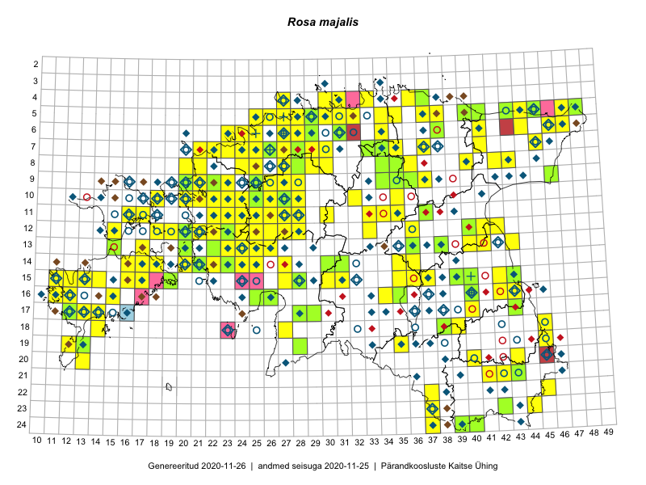

Rosa majalis
Uuendatud: 2016-12-08
Kaardile koondatud taksonid: Rosa majalis Herrm.

Kaart põhineb 178 kirjel, neist vaatlusi 169 ja eksemplare 9. Taksonit on leitud 140 ruudust.
| Ruut | Vaatleja(d) | Vaatlusaeg | Kirje tüüp | Viide andmebaasikirjele |
|---|---|---|---|---|
| 12-28 | Tiit Hallikma, Toomas Kukk, Indrek Tammekänd | 2015-06-09 | ruut/ala | vaata PlutoFis |
| ? | Malle Leht | 2015-07-09 | ruut/ala | vaata PlutoFis |
| 13-15 | Toomas Kukk, Eerik Leibak | 2015-08-10 | punkt | vaata PlutoFis |
| 13-15 | Toomas Kukk, Eerik Leibak | 2015-08-10 | ruut/ala | vaata PlutoFis |
| 05-31 | Rein Kalamees, Kersti Püssa | 2015-08-09 | ruut/ala | vaata PlutoFis |
| 05-45 | Tiit Hallikma, Toomas Kukk | 2015-07-21 | ruut/ala | vaata PlutoFis |
| 18-45 | Peedu Saar | 2015-07-04 | ruut/ala | vaata PlutoFis |
| 15-42 | Peedu Saar, Eerik Leibak | 2015-07-30 | ruut/ala | vaata PlutoFis |
| 13-26 | Ott Luuk | 2015-06-28 | ruut/ala | vaata PlutoFis |
| 04-31 | Rein Kalamees, Kersti Püssa | 2015-06-30 | ruut/ala | vaata PlutoFis |
| 06-44 | Peedu Saar, Liina Oja | 2015-07-21 | ruut/ala | vaata PlutoFis |
| 15-30 | Tiit Hallikma, Toomas Kukk | 2015-06-10 | ruut/ala | vaata PlutoFis |
| 13-40 | Peedu Saar | 2015-08-10 | ruut/ala | vaata PlutoFis |
| 13-41 | Peedu Saar | 2015-08-11 | ruut/ala | vaata PlutoFis |
| 13-40 | Mall Hiiemäe | 2015 | ruut/ala | vaata PlutoFis |
| 16-12 | Toomas Kukk, Mari Reitalu | 2014-06-20 | ruut/ala | vaata PlutoFis |
| 17-12 | Toomas Kukk, Mari Reitalu | 2014-06-20 | ruut/ala | vaata PlutoFis |
| 06-31 | Rein Kalamees, Kersti Püssa | 2015-06-01 | ruut/ala | vaata PlutoFis |
| 18-14 | Toomas Kukk | 2014-06-18 | ruut/ala | vaata PlutoFis |
| 04-30 | Rein Kalamees, Kersti Püssa | 2015-09-01 | ruut/ala | vaata PlutoFis |
| 05-38 | Rein Kalamees, Kersti Püssa | 2015-05-29 | ruut/ala | vaata PlutoFis |
| 05-47 | Tiit Hallikma, Toomas Kukk | 2015-07-22 | ruut/ala | vaata PlutoFis |
| 05-34 | Rein Kalamees, Kersti Püssa | 2015-06-06 | ruut/ala | vaata PlutoFis |
| 05-35 | Rein Kalamees, Kersti Püssa | 2015-06-06 | ruut/ala | vaata PlutoFis |
| 04-36 | Rein Kalamees, Kersti Püssa | 2015-05-31 | ruut/ala | vaata PlutoFis |
| 04-30 | Rein Kalamees, Kersti Püssa | 2015-06-12 | ruut/ala | vaata PlutoFis |
| 13-24 | Rein Kalamees, Kersti Püssa | 2015-04-30 | ruut/ala | vaata PlutoFis |
| 14-16 | Ott Luuk, Elle Roosaluste, Jaak-Albert Metsoja | 2015-06-15 | ruut/ala | vaata PlutoFis |
| 08-43 | Toomas Kukk, Peedu Saar | 2014-07-09 | ruut/ala | vaata PlutoFis |
| 11-34 | Ott Luuk, Hannes Pehlak | 2015-06-08 | ruut/ala | vaata PlutoFis |
| 10-22 | Toomas Kukk, Thea Kull | 2014-08-21 | ruut/ala | vaata PlutoFis |
| 10-23 | Toomas Kukk, Thea Kull | 2014-08-22 | ruut/ala | vaata PlutoFis |
| 07-41 | Toomas Kukk, Peedu Saar | 2014-09-12 | ruut/ala | vaata PlutoFis |
| 06-41 | Toomas Kukk, Peedu Saar | 2014-09-12 | ruut/ala | vaata PlutoFis |
| 14-24 | Toomas Kukk, Ott Luuk, Sander Laherand | 2014-08-24 | ruut/ala | vaata PlutoFis |
| 11-16 | Eeva-Maria Jeletsky, Tarmo Niitla | 2015-06-22 | ruut/ala | vaata PlutoFis |
| 11-17 | Eeva-Maria Jeletsky, Tarmo Niitla | 2015-06-17 | ruut/ala | vaata PlutoFis |
| 09-21 | Ott Luuk, Peedu Saar | 2015-08-26 | ruut/ala | vaata PlutoFis |
| 19-13 | Oliver Parrest | 2015-07-01 | ruut/ala | vaata PlutoFis |
| 13-23 | Ott Luuk, Peedu Saar | 2014-08-29 | ruut/ala | vaata PlutoFis |
| 07-24 | Erkki Otsman, Sergei Smirnov | 2015-06-22 | ruut/ala | vaata PlutoFis |
| 05-27 | Erkki Otsman, Sergei Smirnov | 2015-07-08 | ruut/ala | vaata PlutoFis |
| 15-11 | Mari Reitalu | 2014-05-18 | ruut/ala | vaata PlutoFis |
| 17-12 | Mari Reitalu | 2014-08-31 | ruut/ala | vaata PlutoFis |
| 05-28 | Erkki Otsman, Sergei Smirnov | 2015-06-26 | ruut/ala | vaata PlutoFis |
| 17-12 | Mari Reitalu | 2014-09-02 | ruut/ala | vaata PlutoFis |
| 07-25 | Erkki Otsman, Sergei Smirnov | 2015-07-17 | ruut/ala | vaata PlutoFis |
| 17-12 | Mari Reitalu | 2015-06-19 | ruut/ala | vaata PlutoFis |
| 17-12 | Mari Reitalu | 2015-07-02 | ruut/ala | vaata PlutoFis |
| 05-29 | Erkki Otsman, Sergei Smirnov | 2015-07-12 | ruut/ala | vaata PlutoFis |
| 19-12 | Oliver Parrest | 2015-08-18 | ruut/ala | vaata PlutoFis |
| 16-12 | Mari Reitalu | 2015-06-10 | ruut/ala | vaata PlutoFis |
| 17-13 | Mari Reitalu, Oliver Parrest | 2015-08-04 | ruut/ala | vaata PlutoFis |
| 15-12 | Mari Reitalu, Oliver Parrest | 2015-07-14 | ruut/ala | vaata PlutoFis |
| 15-13 | Mari Reitalu, Oliver Parrest | 2015-07-24 | ruut/ala | vaata PlutoFis |
| 05-29 | Thea Kull | 2014-07-14 | ruut/ala | vaata PlutoFis |
| 16-11 | Triin Reitalu, Mari Reitalu | 2015-08-09 | ruut/ala | vaata PlutoFis |
| 20-13 | Oliver Parrest | 2015-08-15 | ruut/ala | vaata PlutoFis |
| 11-26 | Aat Sarv | 2015-07-21 | ruut/ala | vaata PlutoFis |
| 11-27 | Aat Sarv | 2015-07-25 | ruut/ala | vaata PlutoFis |
| 10-25 | Aat Sarv | 2015-06-29 | ruut/ala | vaata PlutoFis |
| 10-26 | Aat Sarv | 2015-07-22 | ruut/ala | vaata PlutoFis |
| 11-24 | Aat Sarv | 2015-06-24 | ruut/ala | vaata PlutoFis |
| 15-16 | Karin Kikas, Elle Rajandu | 2015-07-23 | ruut/ala | vaata PlutoFis |
| 16-15 | Karin Kikas, Elle Rajandu | 2015-07-20 | ruut/ala | vaata PlutoFis |
| 17-14 | Karin Kikas, Elle Rajandu | 2015-07-22 | ruut/ala | vaata PlutoFis |
| 05-42 | Kaili Orav, Silvia Pihu | 2015-06-18 | ruut/ala | vaata PlutoFis |
| 05-41 | Kaili Orav, Silvia Pihu | 2015-06-18 | ruut/ala | vaata PlutoFis |
| 14-18 | Elle Rajandu | 2015-07-24 | punkt | vaata PlutoFis |
| 06-38 | Kaili Orav, Silvia Pihu | 2015-07-20 | ruut/ala | vaata PlutoFis |
| 05-40 | Kaili Orav, Silvia Pihu | 2015-07-21 | ruut/ala | vaata PlutoFis |
| 10-26 | Peedu Saar, Rein Kalamees, Kersti Püssa | 2014-06-12 | ruut/ala | vaata PlutoFis |
| 07-37 | Peedu Saar, Ott Luuk | 2014-10-08 | ruut/ala | vaata PlutoFis |
| 24-39 | Toomas Kukk, Peedu Saar, Kersti Püssa, Rein Kalamees | 2014-06-09 | ruut/ala | vaata PlutoFis |
| 10-27 | Peedu Saar, Ott Luuk, Meeli Mesipuu, Thea Kull, Kersti Püssa, Rein Kalamees, Toomas Kukk | 2014-06-10 | ruut/ala | vaata PlutoFis |
| 09-26 | Peedu Saar, Kersti Püssa, Rein Kalamees, Toomas Kukk | 2014-06-11 | ruut/ala | vaata PlutoFis |
| 16-34 | Aat Sarv | 2015-07-01 | ruut/ala | vaata PlutoFis |
| 10-25 | Ott Luuk, Jaak-Albert Metsoja, Maret Gerz | 2014-06-11 | ruut/ala | vaata PlutoFis |
| 10-26 | Jaak-Albert Metsoja, Ott Luuk, Maret Gerz | 2014-06-11 | ruut/ala | vaata PlutoFis |
| 11-25 | Hanna-Eliisa Luts, Tõnu Ploompuu | 2015-07-28 | ruut/ala | vaata PlutoFis |
| 10-20 | Tõnu Ploompuu, Anna-Grete Rebane, Hanna-Eliisa Luts | 2015-07-20 | ruut/ala | vaata PlutoFis |
| 16-11 | Mari Reitalu, Triin Reitalu | 2015-08-09 | ruut/ala | vaata PlutoFis |
| 10-24 | Hanna-Eliisa Luts, Tõnu Ploompuu, Anna-Grete Rebane | 2015-07-19 | ruut/ala | vaata PlutoFis |
| 11-26 | Hanna-Eliisa Luts, Tõnu Ploompuu | 2015-07-28 | ruut/ala | vaata PlutoFis |
| 11-22 | Tõnu Ploompuu | 2015-08-21 | ruut/ala | vaata PlutoFis |
| 06-27 | Tõnu Ploompuu | 2015-08-11 | ruut/ala | vaata PlutoFis |
| 10-22 | Tõnu Ploompuu | 2015-08-21 | ruut/ala | vaata PlutoFis |
| 11-28 | Hanna-Eliisa Luts, Tõnu Ploompuu | 2015-07-21 | ruut/ala | vaata PlutoFis |
| 11-23 | Hanna-Eliisa Luts, Anna-Grete Rebane, Tõnu Ploompuu | 2015-07-20 | ruut/ala | vaata PlutoFis |
| 09-25 | Meelis Muuga, Tõnu Ploompuu | 2015-08-17 | ruut/ala | vaata PlutoFis |
| 08-25 | Meelis Muuga, Tõnu Ploompuu | 2015-08-17 | ruut/ala | vaata PlutoFis |
| 04-27 | Toomas Kukk | 2016-05-25 | ruut/ala | vaata PlutoFis |
| 12-26 | Andrus Jair, Tõnu Ploompuu | 2015-05-17 | ruut/ala | vaata PlutoFis |
| 08-24 | Sirje Lagle, Tõnu Ploompuu | 2015-08-18 | ruut/ala | vaata PlutoFis |
| 09-22 | Sirje Lagle, Tõnu Ploompuu | 2015-05-15 | ruut/ala | vaata PlutoFis |
| 06-28 | Toomas Kukk | 2016-06-06 | ruut/ala | vaata PlutoFis |
| 09-22 | Tõnu Ploompuu | 2015-07-14 | ruut/ala | vaata PlutoFis |
| 09-23 | Hanna-Eliisa Luts, Tõnu Ploompuu | 2015-07-16 | ruut/ala | vaata PlutoFis |
| 09-26 | Tõnu Ploompuu | 2015-05-20 | ruut/ala | vaata PlutoFis |
| 10-21 | Tõnu Ploompuu | 2015-05-02 | ruut/ala | vaata PlutoFis |
| 10-20 | Tõnu Ploompuu | 2015-05-02 | ruut/ala | vaata PlutoFis |
| 10-21 | Tõnu Ploompuu | 2015-08-21 | ruut/ala | vaata PlutoFis |
| 10-23 | Sirje Lagle, Tõnu Ploompuu | 2015-05-15 | ruut/ala | vaata PlutoFis |
| 11-27 | Andrus Jair, Tõnu Ploompuu | 2015-05-17 | ruut/ala | vaata PlutoFis |
| 23-44 | Rein Kalamees, Eerik Leibak | 2016-06-15 | ruut/ala | vaata PlutoFis |
| 19-45 | Toomas Kukk, Tiit Hallikma | 2016-06-17 | ruut/ala | vaata PlutoFis |
| 21-42 | Sander Laherand, Ott Luuk | 2016-06-16 | ruut/ala | vaata PlutoFis |
| 22-37 | Silvia Pihu | 2015-06-27 | punkt | vaata PlutoFis |
| 21-41 | Ott Luuk, Sander Laherand | 2016-06-16 | ruut/ala | vaata PlutoFis |
| 20-40 | Peedu Saar, Tarmo Niitla | 2016-06-17 | ruut/ala | vaata PlutoFis |
| 18-27 | Peedu Saar, Ott Luuk | 2016-06-10 | ruut/ala | vaata PlutoFis |
| 06-25 | Toomas Kukk, Sander Laherand | 2016-07-05 | ruut/ala | vaata PlutoFis |
| 14-25 | Toomas Kukk, Oliver Parrest | 2016-07-08 | ruut/ala | vaata PlutoFis |
| 12-28 | Mari Reitalu, Eerik Leibak | 2016-07-06 | ruut/ala | vaata PlutoFis |
| 10-18 | Sander Laherand, Toomas Kukk | 2016-07-07 | ruut/ala | vaata PlutoFis |
| 14-21 | Mari Reitalu, Oliver Parrest | 2016-07-04 | ruut/ala | vaata PlutoFis |
| 12-36 | Toomas Kukk, Raivo Kalle | 2016-07-22 | ruut/ala | vaata PlutoFis |
| 12-33 | Tõnu Ploompuu, Marko Veinbergs, Eerik Leibak | 2016-07-22 | ruut/ala | vaata PlutoFis |
| 11-33 | Tõnu Ploompuu, Marko Veinbergs, Eerik Leibak | 2016-07-22 | ruut/ala | vaata PlutoFis |
| 09-34 | Ott Luuk, Eerik Leibak | 2016-07-25 | ruut/ala | vaata PlutoFis |
| 13-36 | Toomas Kukk, Raivo Kalle | 2016-07-22 | ruut/ala | vaata PlutoFis |
| 05-37 | Tõnu Ploompuu, Eerik Leibak | 2016-07-27 | ruut/ala | vaata PlutoFis |
| 05-25 | Sander Laherand, Toomas Kukk | 2016-07-05 | ruut/ala | vaata PlutoFis |
| 08-35 | Sander Laherand, Toomas Kukk, Nele Jõessar | 2016-07-27 | ruut/ala | vaata PlutoFis |
| 10-35 | Toomas Kukk, Tiit Hallikma | 2016-07-25 | ruut/ala | vaata PlutoFis |
| 05-47 | Erkki Otsman, Sergei Smirnov | 2016-06-16 | ruut/ala | vaata PlutoFis |
| 14-22 | Erkki Otsman, Sergei Smirnov | 2016-06-23 | ruut/ala | vaata PlutoFis |
| 14-21 | Erkki Otsman, Sergei Smirnov | 2016-06-24 | ruut/ala | vaata PlutoFis |
| 05-26 | Erkki Otsman, Sergei Smirnov | 2016-06-29 | ruut/ala | vaata PlutoFis |
| 08-29 | Sander Laherand, Rein Kalamees | 2016-07-08 | ruut/ala | vaata PlutoFis |
| 20-43 | Peedu Saar, Thea Kull | 2016-08-05 | ruut/ala | vaata PlutoFis |
| 06-28 | Erkki Otsman, Sergei Smirnov | 2016-07-14 | ruut/ala | vaata PlutoFis |
| 07-28 | Erkki Otsman, Sergei Smirnov | 2016-07-15 | ruut/ala | vaata PlutoFis |
| 11-30 | Erkki Otsman, Sergei Smirnov | 2016-07-18 | ruut/ala | vaata PlutoFis |
| 07-27 | Erkki Otsman, Sergei Smirnov | 2016-07-21 | ruut/ala | vaata PlutoFis |
| 05-29 | Toomas Kukk, Sander Laherand | 2016-08-29 | ruut/ala | vaata PlutoFis |
| 05-32 | Toomas Kukk, Sander Laherand | 2016-08-31 | ruut/ala | vaata PlutoFis |
| 08-27 | Erkki Otsman, Sergei Smirnov | ruut/ala | vaata PlutoFis | |
| 12-15 | Toomas Kukk, Meeli Mesipuu | 2016-08-10 | ruut/ala | vaata PlutoFis |
| 04-31 | Sander Laherand, Toomas Kukk | 2016-08-31 | ruut/ala | vaata PlutoFis |
| 05-38 | Thea Kull, Toomas Kukk | 2016-09-05 | ruut/ala | vaata PlutoFis |
| 07-30 | Toomas Kukk, Peedu Saar | 2016-09-09 | ruut/ala | vaata PlutoFis |
| 09-37 | Mari Reitalu, Triin Reitalu | 2016-07-11 | ruut/ala | vaata PlutoFis |
| 13-20 | Mari Reitalu, Sirje Azarov | 2016-08-17 | ruut/ala | vaata PlutoFis |
| 14-20 | Mari Reitalu, Sirje Azarov | 2016-08-17 | ruut/ala | vaata PlutoFis |
| 09-27 | Rein Kalamees, Liina Oja | 2016-07-06 | ruut/ala | vaata PlutoFis |
| 09-28 | Rein Kalamees, Liina Oja | 2016-07-06 | ruut/ala | vaata PlutoFis |
| 15-27 | Tiit Hallikma, Tõnu Ploompuu | 2016-06-20 | ruut/ala | vaata PlutoFis |
| 08-42 | Rein Kalamees, Kersti Püssa | 2016-06-07 | ruut/ala | vaata PlutoFis |
| 06-31 | Peedu Saar, Toomas Kukk | 2016-09-08 | ruut/ala | vaata PlutoFis |
| 08-30 | Peedu Saar, Toomas Kukk | 2016-09-09 | ruut/ala | vaata PlutoFis |
| 09-26 | Peedu Saar, Ott Luuk | 2016-09-05 | punkt | vaata PlutoFis |
| 09-23 | Peedu Saar, Ott Luuk | 2016-09-05 | ruut/ala | vaata PlutoFis |
| 13-17 | Peedu Saar, Ott Luuk | 2016-08-29 | ruut/ala | vaata PlutoFis |
| 08-20 | Tiit Hallikma, Tõnu Ploompuu | 2016-07-07 | ruut/ala | vaata PlutoFis |
| 08-21 | Tiit Hallikma, Tõnu Ploompuu | 2016-07-07 | ruut/ala | vaata PlutoFis |
| 05-40 | Peedu Saar, Sander Laherand | 2016-07-28 | ruut/ala | vaata PlutoFis |
| 11-35 | Peedu Saar, Timo Luhamäe | 2016-07-21 | ruut/ala | vaata PlutoFis |
| 13-24 | Peedu Saar, Timo Luhamäe, Johannes Kõdar | 2016-07-05 | ruut/ala | vaata PlutoFis |
| 13-25 | Peedu Saar, Timo Luhamäe, Johannes Kõdar | 2016-07-05 | ruut/ala | vaata PlutoFis |
| 14-17 | Ott Luuk, Peedu Saar | 2016-08-29 | ruut/ala | vaata PlutoFis |
| 11-27 | Ranno Puumets | 2016-07-09 | ruut/ala | vaata PlutoFis |
| 14-27 | Peedu Saar, Timo Luhamäe | 2016-07-08 | ruut/ala | vaata PlutoFis |
| 12-27 | Ranno Puumets | 2015-06-01 | ruut/ala | vaata PlutoFis |
| 17-28 | Ott Luuk, Liina Oja | 2016-07-20 | ruut/ala | vaata PlutoFis |
| 14-21 | Toomas Kukk | 2012-06-25 | ruut/ala | vaata PlutoFis |
| 22-45 | Jaak-Albert Metsoja, Mari Metsoja | 2016-06-15 | ruut/ala | vaata PlutoFis |
| 22-37 | Jaak-Albert Metsoja, Mari Metsoja | 2016-06-16 | ruut/ala | vaata PlutoFis |
| 07-22 | Marju Erit | 2015-05-01 | ruut/ala | vaata PlutoFis |
| 14-30 | Peedu Saar, Liina Oja | 2015-06-10 | eksemplar | vaata PlutoFis |
| 18-38 | Peedu Saar, Ott Luuk | 2015-09-02 | eksemplar | vaata PlutoFis |
| 12-40 | Peedu Saar, Eerik Leibak | 2015-08-16 | eksemplar | vaata PlutoFis |
| 16-40 | Thea Kull | 2015-07-30 | eksemplar | vaata PlutoFis |
| 15-40 | Thea Kull | 2015-06-21 | eksemplar | vaata PlutoFis |
| 15-43 | Thea Kull, Eerik Leibak | 2015-07-06 | eksemplar | vaata PlutoFis |
| 07-33 | Peedu Saar, Toomas Kukk | 2016-09-15 | eksemplar | vaata PlutoFis |
| 07-33 | Peedu Saar, Toomas Kukk | 2016-09-15 | eksemplar | vaata PlutoFis |
| 19-28 | Peedu Saar, Ott Luuk | 2016-06-09 | eksemplar | vaata PlutoFis |